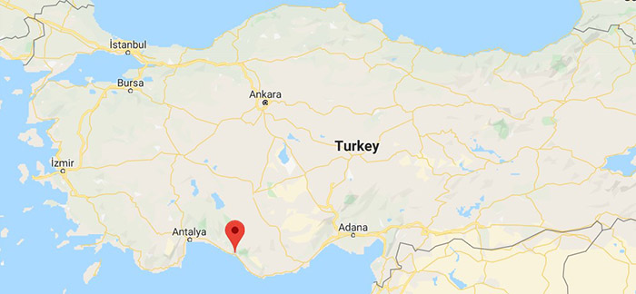
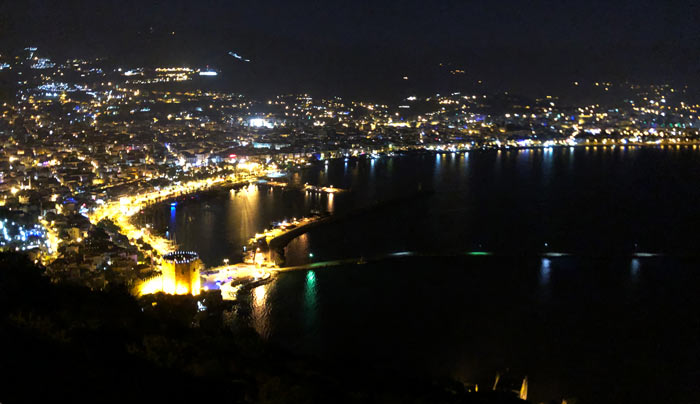
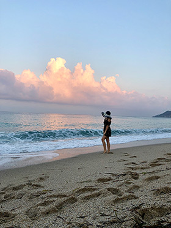
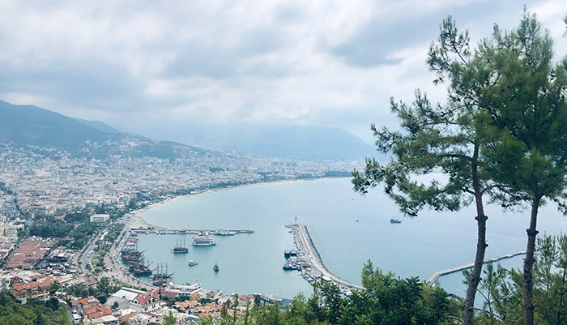

For those who are just starting to explore Turkey, it may be hard to understand where to go on your vacation. However, everything is pretty simple. If you are looking for the warm sea, beaches, mountains, hotels and spa, the best cities are Izmir, Kemer, Fethiye, Marmaris, Alanya, and Antalya. If you want to get to know Turkish culture and dive into the magicacal atmosphere and history, do sightseeing, discover different cuisines, then you need to visit Istanbul, Bursa, Denizli or Goreme (Cappadocia).
Despite the fact that Turkey is one of the most visited countries in the world, there are so many places where most of the tourists haven't been to. I will show you the most beautiful ones, so that you can go ahead and explore this indeed amazing country.
Alanya is a beach resort city and a part of Antalya Province on the southern coast of Turkey (have a look at the map below). It has access to the Mediterranean Sea, as most of the popular resorts in Turkey.
For me, it took about an hour of a car drive from Antalya. We left early in the morning and arrived to Alanya just in time to watch the dawn. If you are flying directly to Alanya from your home country, then you will need to purchase flight tickets to Antalya, and take a bus or taxi from Antalya to get there. But if I were you, I would laso spend a few days in Antalya first, and after you can rent a car (the best thing to do if you need unforgettable experiences), or you can use any other means of transport.
I suggest that you get to know Antalya from the top of the city where the old castle is located. The place opens a breathtaking view of the whole city, mountains and the sea. One of the best locations to meet the sunrise. Use your GPS to navigate. The address is Kale Caddesi closer to Kale Seyir Terasi. The view at night will leave you brethless for a few seconds.
After meeting the sunrise, the best thing is to go to the beach, while there are not to many people around and the sun is not too strong. You can start with Cleopatra beach and walck along the cost line if you want. It is all pretty same, however. Take beautiful pictures and enjoy the warm water of the Mediterranean Sea. The beach is equipped with changing cabins, shower and toilets. You can also rent umbrellas and lounge chairs to relax and feel comfortable. Also, there are many cafes and restaurants in the area where you can try local food or something you are used to, like a traditional omlet and toast.
If a city has a ropeway, I never miss the opportunity to try it. Alanya Teleferik is in walking distance from the Cleopatra beach; however, a car will make your life easier. The 2-way ride costs only 25 TL, and the view is just wow! Now you will see the whole coastline and maybe recognize the beach you were staying at.
After the ropeway ride you will find yourself near the Alanya Castle. Be ready to climb a bit. Make sure you are wearing comfy shoes and have water with you. As you walk up, new views will be opened for you. T ake pictures and leave a moment for yourself to enjoy the place and forget about everything. Explore the Turkish history watching the castle ruins if you want, and after you can go back. Make sure that you buy 2-way ticket for Teleferic ride. "Teleferik" is a ropeway in Turkish.
Spend the eveining at the beach, or at some cafe with a panoramic view and live music, or book a hotel and enjoy Turkish spa or hammam. The choise is up to you. Depends on your preferences.